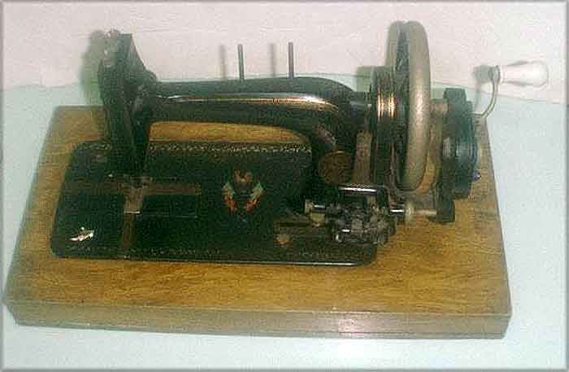

Bernhard Stoewer, Stettin, Grünhof
F. J. Cocks (British Retailer), 'The Royal Leader'
Picture courtesy of Pat Spurr

©
Alan Quinn 2002 All Rights Reserved
This page may not be reproduced or distributed in part or in whole without the prior written permission of the copyright owner